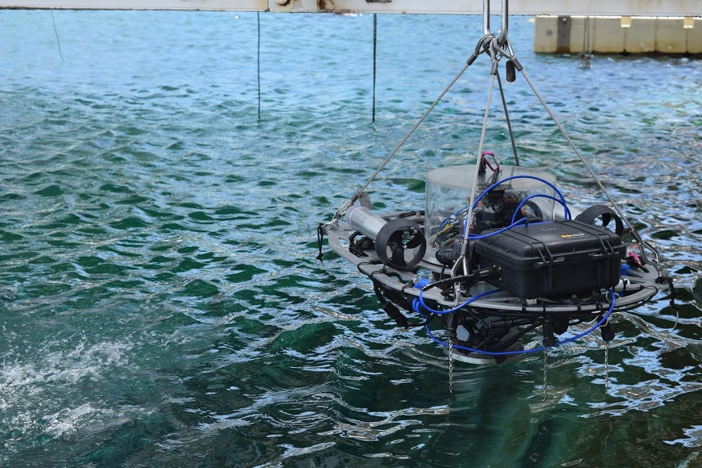
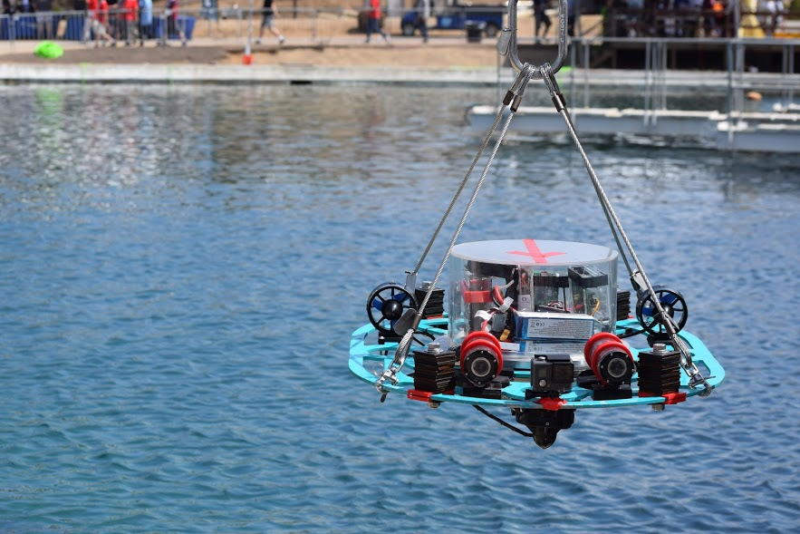
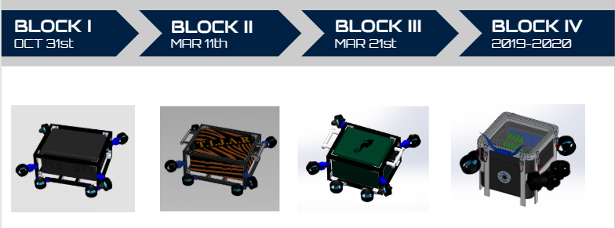
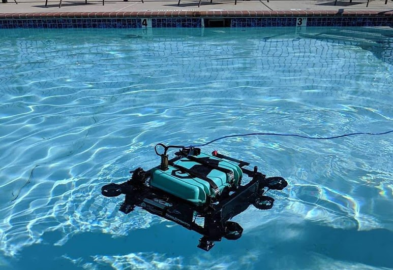

The Poseidon is an autonomous underwater vehicle built by the Utah State RoboSub Team for the AUVSI RoboSub competition. Developed over three years (2013-2016) by 20 team members, Poseidon was fully modeled using SolidWorks CAD software. With extensive research and development, it became the team's lightest, most durable, and most advanced submarine.
PoGenII, the second-generation AUV from the USU RoboSub Team, builds on the Poseidon model from previous years. Upgrades include improved vision recognition, enhanced electrical performance, and new features like a mechanical dropper and torpedo launchers. Its modular design makes PoGenII more adaptive and efficient for underwater navigation and tasks.
Seahorse reflects our efforts to create a simple, adjustable vehicle with custom electronics and thruster controls. The Aggie Marine Robotics team set three main goals for the AUVSI Robosub competition: increasing testing time, completing the qualification maneuver, and redefining the team’s appearance and structure. These objectives were met through a series of testing rigs, each designed to achieve the goals and outperform previous USU Robosub entries.
 